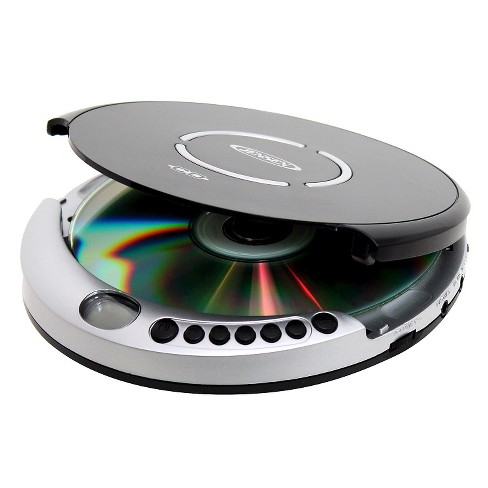

January, 10
Home Work
Ex 4 P94
'Video Recorder'
"VCR" A useful thing that helps to play music on the button,
in our time they use such a thing as the Phone more about it.
'A computer'
climbing into our
time is a thing that mostly consists of, Monitor,
mouse,
Keyboards,
Dynamics,
On such a thing as a computer
actions are limitless
from playing games to programming games, websites, banks, freelancing,
and much more.
'a microwave oven'
it is used for heating, storage,
cooling,
cooking and all.

'a CD player'
And also the drive is used
to play cassettes.
'a television'
Used to watch
Connected channels,
or a smart TV that can be used as
a computer about a computer above.
'a telephone'
Used for calling
and answering calls.
'a digital camera'
Used for amateur,
professional shooting
circles

'a photocopier'
Used to copy
sheet
data
different format

'a washing machine'
used for washing
dirty clothes

'a mobile telephone'
It's in the majority
how portable
the world of today's man,
it is used,
can be used to view browser pages,
calls writing code for anything (App,
site, game,
script)
'a refrigerator'
This thing is used to store food,
it has a freezer
compartment that is used as a freezer,
it is designed to store cold things.
'a playstation'
Used as a game console,
game console,
it is a platform for storing games, saves.
'a vacuum cleaner'
It is used as a replacement for an important thing like "Broom",
it is designed for cleaning a large room, general cleaning
(General cleaning from the reduction General, (General is the main one) that is, the main cleaning of the premises,
large-scale cleaning of the premises
'a ventilator'
An important thing that is used to cool the house,
apartment, br
there is also
a mini version of the fan,
it is used to cool the environment around you,
workplace
'an electric kettle'
This device is used to heat water,
the liquid inside it.
'a toaster'
This item is used to heat an item.
inside it,
most use bread.